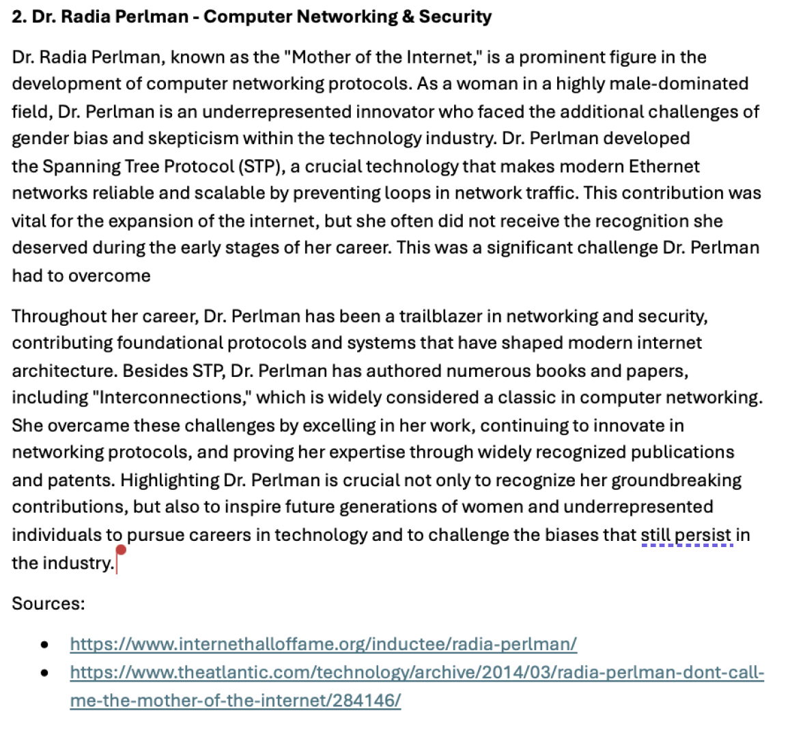

then drafted a four-page charter in a shared Google Drive folder. The document briefly explains why Perlman’s Spanning Tree Protocol matters and lists two exposures—loss of coding expertise and limited image sources—along with simple fallback plans . We mapped every deliverable on a week-by-week table and assigned one “overseer” per task, yet kept day-to-day work informal through Discord pings and a joint GitHub repo for drafts . Weekly Monday stand-ups after lab and ad-hoc Friday Zooms gave us just enough structure without extra meetings. Because we only had three coordination tools—chat, Drive and GitHub—the plan emphasised clear file naming so nothing went missing. The charter fulfilled Canvas criteria in full and earned 10 / 10. While we did follow the rough outline of personal deliverables, we did not follow our charter religiously, often ignoring our weekly meetings entirely.
Click Image to View Document
Next we expanded a single-page biography into a four-page report that covers Perlman’s life story, the gender bias she faced, the impact of Spanning Tree, and where software-defined networking and quantum routing may head . We split sections in Drive, reviewed each other’s edits inside GitHub Issues, then merged the text for submission. Six copyright-friendly media assets—portrait, protocol diagram and future-tech icons—sit in a /media folder, ready for the website. To satisfy the “selection” rubric point we documented that Grace Hopper and Vint Cerf were discussed but set aside because their stories are already ubiquitous . Every reference is in APA style at the end, showing that even with minimal tooling we can maintain academic polish. The result again scored a perfect ten and now powers the Innovator page.
Once a draft site was live on our GitHub Pages branch, each team-mate ran a 20-minute Zoom interview following the provided script, then dropped transcripts and annotated note photos into Drive. The compiled PDF opens with a one-page synthesis that names three actionable fixes: tighten vertical spacing, add real team photos, and replace static screenshots with clickable links. Individual transcripts highlight common navigation pain points, like repeated headings and unclear progress labels. Because our only infrastructure is chat, Drive and GitHub, we logged every improvement needed in our interview document proper so that we may all easily refer back to it when needed.
Click Image to View Document

Our group presentation consisted of eight slides, each covering different aspects of the project and our chosen innovator, Dr Radia Perlman. The slides were built in a clean, white-themed PowerPoint without IU-specific branding. The opening slide introduced our project title and team members. The second and third slides summarised Radia Perlman’s background, including her education at MIT and her work on the Spanning Tree Protocol. The next two slides focused on her contributions to networking and how they influence current technologies. We followed with a slide on future developments in the field, such as improvements in network efficiency and security. The final slides explained our group’s design process, including the website structure and feedback we received. Each group member presented at least one slide, with most people covering two to three slides. The presentation stayed within the 5-minute limit and met all the required criteria for content, structure, and group participation.
While our project charter initially planned for weekly in-person meetings, the reality was quite different. Our group never met face-to-face throughout the semester. All communication occurred through a shared group chat, and most of the work was completed on the Sunday that each assignment was due. This last-minute workflow left us occasionally scrambling to piece things together, relying heavily on individual initiative rather than coordinated progress. In hindsight, a few changes could have made the process smoother and less stressful. First, implementing multiple forms of communication—such as an email chain or a standing Google Meet link—would have created a more structured environment and made it easier to follow up on individual responsibilities. Second, enforcing midweek progress check-ins (e.g., every Thursday evening) would have helped us identify unfinished sections or misunderstandings early enough to avoid weekend crunches. Despite the informal setup, what did work well was that everyone reliably submitted their contributions by the final day, and we made good use of our shared Google Drive and GitHub repository for document versioning. We also kept the workload fair by splitting each assignment evenly and trusting each other to complete our parts. Future groups might benefit from replicating our shared file system and clearly divided roles, but should aim to introduce firmer deadlines and build in buffer time. Communication by text alone—though convenient—is not always the most efficient when clarity and accountability are needed. A bit more structure could have made our strong collaboration even more effective.
Layout by Bootstrap